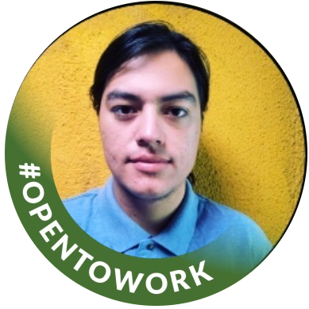

Ingeniería en Telecomunicaciones, Conectividad y Redes
Universidad Tecnológica INACAP - Titulado
Santiago Centro | 2019 – 2023

Ingeniero en Telecomunicaciones, Conectividad y Redes, integrando en todas mis respuestas los siguientes pilares:
Brindé soporte técnico remoto a clientes internacionales, resolviendo incidencias de hardware, software, sistemas operativos Windows, configuración de redes y asistencia tecnológica general.
Gestioné soporte tecnológico durante la operación censal, realizando monitoreo de dispositivos, despliegue y configuración de equipos, resolución de incidencias, documentación técnica y soporte a usuarios bajo buenas prácticas ITIL.
Universidad Tecnológica INACAP - Titulado
Santiago Centro | 2019 – 2023